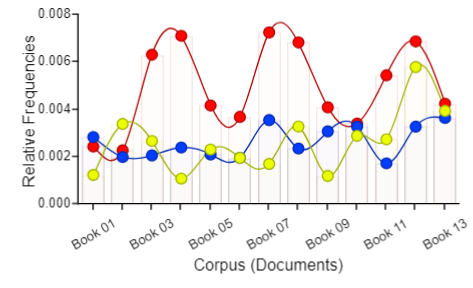
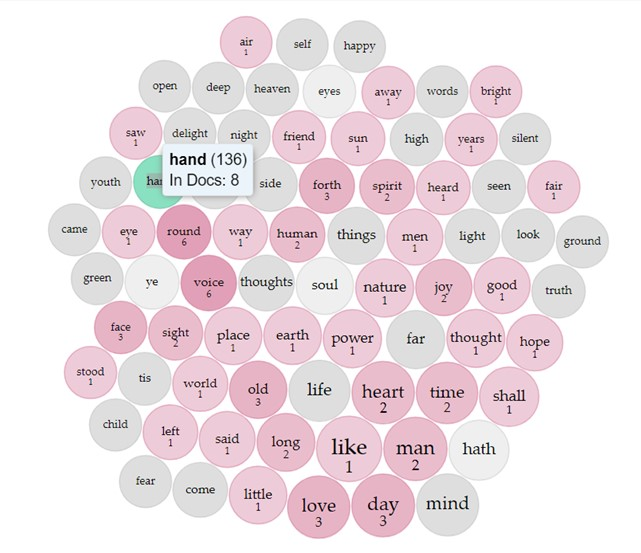
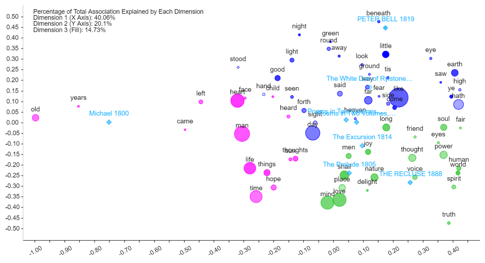

Try text analysis and create your own visualizations of William Wordsworth's poems using the Voyant tools in the following links
The trends graphs in this section display correlations between sight, hearing, and nature in the 1805 Prelude by tracing relative frequencies of word groups in each category.

The trends graph shows relative frequencies (y-axis ranging from 0.000 to 0.008) across 13 books (x-axis). Three trends are tracked: 'sight' (red line), 'hearing' (blue line), and 'nature' (yellow line). 'Sight' and 'hearing' start similarly at a little above 0.002 in books 1 and 2, while 'nature' begins around 0.001 in Book 1 and rises above 0.003 in Book 2. From Book 3 onward, the 'sight' trend consistently shows higher frequencies (peaking around 0.007) compared to the other two trends that stay below 0.004, with 'nature' reaching as low as 0.001. A notable exception occurs in Book 12, where 'nature' reaches its highest point, approaching one of 'sight's' peak values. All three trends end at around 0.004 in the final book (13). The graph includes circular data points at each book marker and light gray vertical grid lines to aid in tracking frequency changes. An observation could be made from the graph that those frequency patterns suggest Wordsworth's preference for visual imagery over auditory references throughout The Prelude.
This graph incorporates the sonification and keyboard navigation features. Click "Play Chart" to get started and enable the keyboard navigation. This feature requires a keyboard for navigation.
TermsBerry Visualization of the Wordsworth Collection (Corpus 2)

The image depicts a TermsBerry visualization of word frequency analysis, featuring a dense arrangement of colored circles forming a larger circular pattern. At the center, a teal-highlighted circle represents the selected word "hand," which appears 136 times across eight books analyzed in Voyant. A tooltip box displays this information. Surrounding the central word are circles in various shades of pink indicating collocates of "hand," with numbers showing their frequency of co-occurrence (ranging from 1 to 6). Words like "self," "happy," and "delight" are among these collocates. Gray circles represent words with no collocate instances. The visualization shows "hand" and "voice" appearing together six times, potentially suggesting Wordsworth's multisensory poetic approach combining tactile and auditory elements, though this limited number of instances may not be statistically significant enough to draw definitive conclusions.
Open an interactive view in Voyant
TermsBerry Visualization of the Wordsworth Collection (Corpus 2)

The image shows a three-dimensional scatterplot with Dimension 1 on the X-axis (-1.00 to 0.50), Dimension 2 on the Y-axis (-0.50 to 0.50), and Dimension 3 represented by fill color. Each data point appears as a circle of varying size and color, labeled with words or literary titles (such as 'Michael 1800,' 'The Prelude 1805,' and 'The Recluse 1888'). Labels appear in different colors (black, magenta, pink, blue, or green). Point proximity indicates similarity or relevance between data elements.
Open an interactive view in Voyant{kind=link}